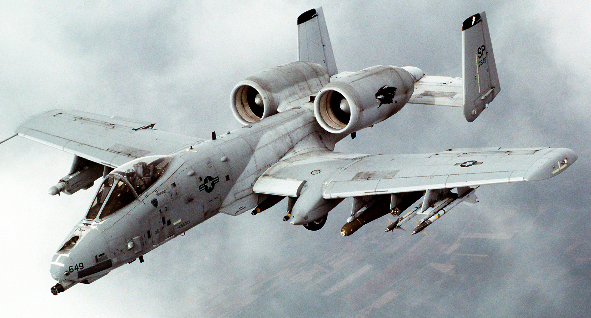
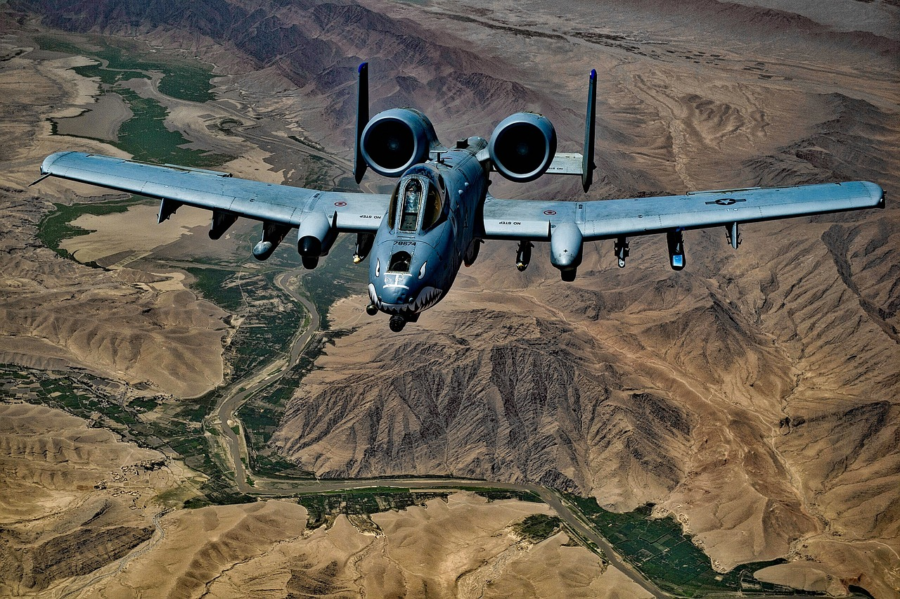
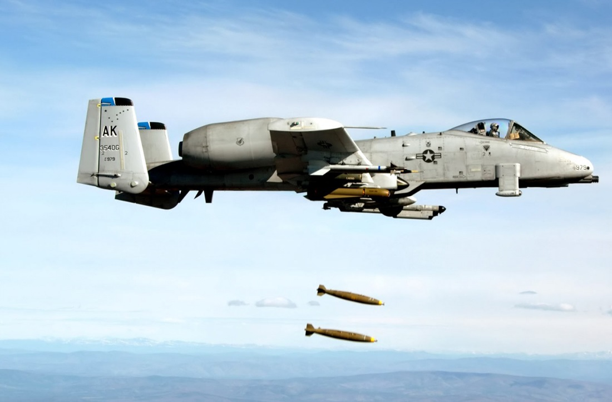

A-10 Thunderbolt II (укр. «Та́ндерболт II»; також відомий на прізвисько англ. Warthog — «бородавочник»[2]) — американський броньований одномісний штурмовик, призначений для знищення танків, бронеавтомобілів та інших наземних цілей. Названий на честь винищувача-бомбардувальника часів Другої світової війни P-47 «Тандерболт».
Його корпус здатний витримувати прямі влучення бронебійних і осколково-фугасних снарядів калібром до 23 мм. Літак розрахований на політ з одним двигуном, одним хвостовим оперенням, однією незмінною рульовою висотою та відсутністю половини крила. Баки «Бородавочника» також броньовані , а щоб уникнути спалаху, паливні баки заповнюють спеціальною противибуховою піною. Два резервуари з паливом розташовуються у фюзеляжі та два в крилах, загальний об’єм палива дорівнює 4840 кг. Крім того, на штурмовик можна додатково встановити три підвісні баки з паливом, загальна ємність яких становить 2280 літрів. Ще однією перевагою вважається можливість дозаправлення літака в повітрі.
Кабіна та частини системи керування польотом захищені титановою бронею вагою 540 кг, яку називають «ванною». Броня була випробувана, щоб витримати удари 23-мм гармат і деякі удари 57-мм снарядів. Дану броню становлять титанові пластини завтовшки 13–38 мм, тому вага титанової «ванни» дорівнює майже 6% ваги порожнього літака. Щоб захистити пілота від осколків, які можуть виникнути внаслідок удару снаряда, уся внутрішня поверхня «ванни», покрита багатошаровим нейлоновим екраном.
Доказ довговічності штурмовика А-10 був продемонстрований, коли капітан Кім Кемпбелл, яка виконувала наземну місію підтримки в Іраку 7 квітня 2003 року над Багдадом, потрапила під ворожий зенітний обстріл. Унаслідок обстрілу було пошкоджено один із двигунів та вийшла з ладу гідравлічна система. Це вимагало керування літаком за рахунок стабілізаторів та системи управління польотом через резервну механічну систему, яка відома як «режим ручного реверсу». Незважаючи на ці пошкодження, Кемпбелл зуміла керувати літаком майже годину та успішно приземлитися.
Стосовно самозахисту A-10, зазвичай літають із платформою ECM ALQ-131 під одним крилом і двома ракетами «повітря-повітря» AIM-9 Sidewinder під іншим крилом.
